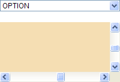
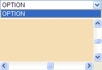

无。
在 Chrome 中，若通过脚本控制当前页或其内某个子框架页的页面滚动条发生滚动，则弹出的 SELECT 元素下拉列表菜单此时会消失。
此问题可能导致页面中所有 SELECT 元素在 Chrome 中点击后无法正常显示下拉菜单，从而 SELECT 中各项均无法被点击。
| Chrome |
|---|
根据问题描述构建如下测试样例：scroll.html
<!DOCTYPE html> <html> <head> </head> <body> <select
style="width:200px; font:12px Arial;"> <option>OPTION</option> </select>
<br /><br /> <iframe name="ifr" frameborder="0"
style="width:200px; height:100px;"></iframe> <script> window.onload = function
() { var x = 0, y = 0, ifr = frames['ifr']; ifr.document.write('<body
style="background:wheat;"><div
style="width:2000px;height:1000px;"></div></body>'); setInterval(function () {
(x >= 2000 && y >= 1000) && (x = 0, y = 0); ifr.scroll(x+=20, y+=10); }, 50); } </script>
</body> </html>
页面中有一个 SELECT 元素及一个 IFRAME 元素，IFRAME 元素内的子框架页生成了页面滚动条，通过脚本调用 window.scroll()1 方法使页面滚动条发生滚动，此时点击 SELECT 元素以使其弹出下拉菜单。
这段代码在各浏览器中运行效果为：
| Chrome | IE6 IE7 IE8 Firefox Safari Opera |
|---|---|
|  |  |
可见，在 Chrome 中，若通过脚本控制 IFRAME2 元素内子框架页的页面滚动条发生滚动，则弹出的 SELECT 元素下拉列表菜单此时会消失。
注 1: window.scroll() 与 当前浏览器文档模式下有效的修改页面 scrollTop、scollLeft 均会触发此现象；
注 2: 不仅 IFRAME 元素内子框架页面的页面滚动条，SELECT 元素所在页面的页面滚动条通过脚本发生滚动后同样会出现此现象。
除非放弃页面滚动条自动滚动的功能，否则目前没有很好的解决方案，此问题需要等待浏览器厂商修复。
| 操作系统版本: | Windows 7 Ultimate build 7600 |
|---|---|
| 浏览器版本: |
IE6
IE7 IE8 Firefox 3.6.10 Chrome 7.0.544.0 dev Safari 5.0.2 Opera 10.62 |
| 测试页面: | scroll.html |
| 本文更新时间: | 2010-10-13 |
SELECT scroll scrollTop scrollLeft 滚动 IFRAME